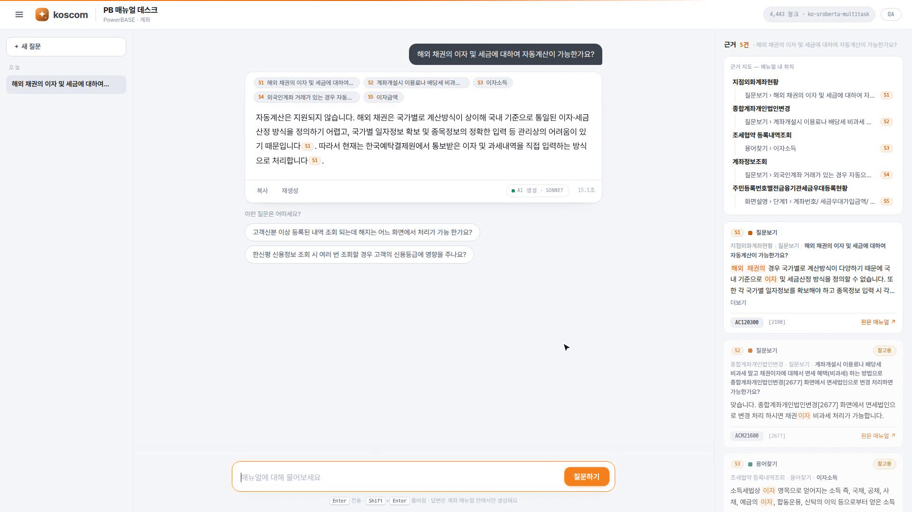
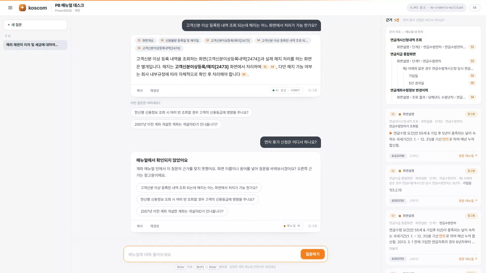
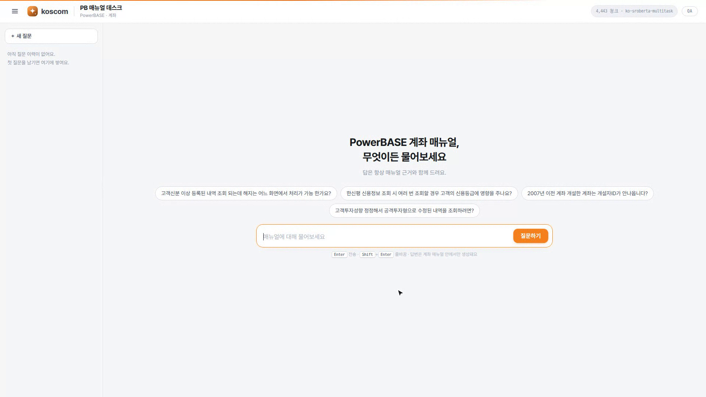
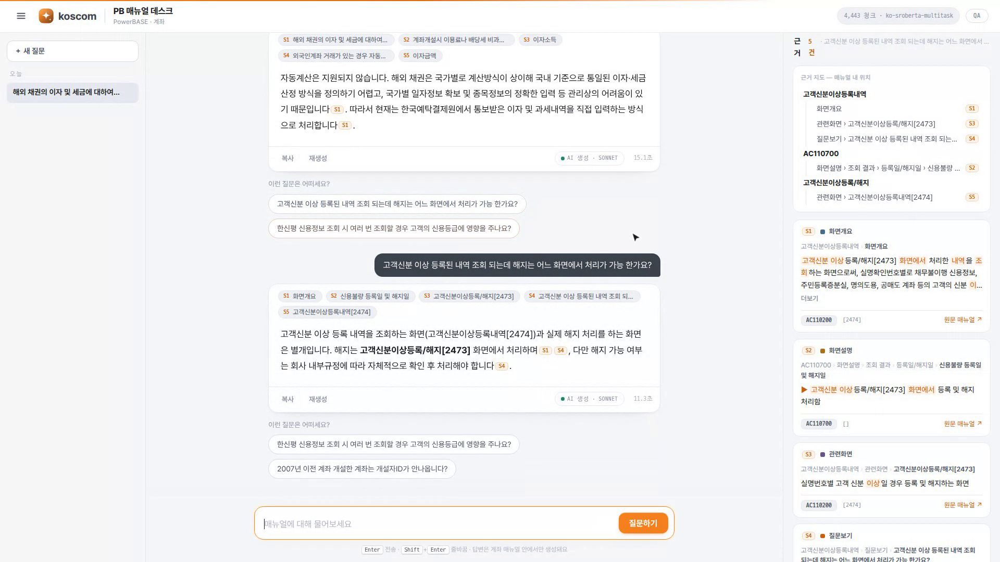
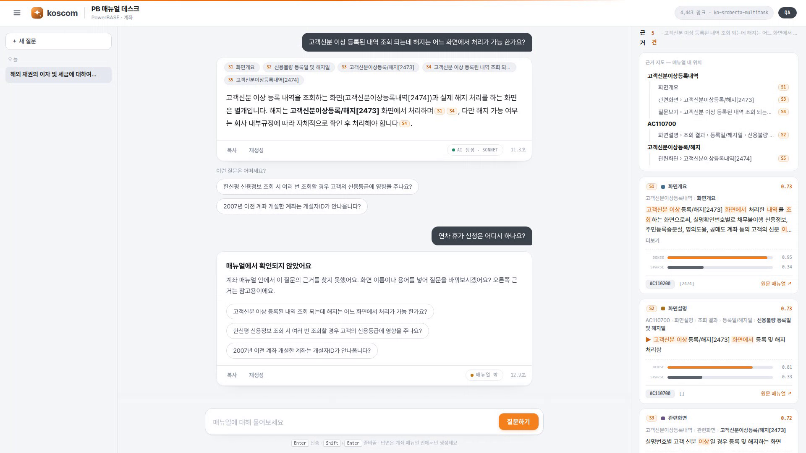

PB 매뉴얼 데스크로 배우는 RAG × Claude Code —
데이터 전처리부터 배포까지, 복사-붙여넣기로 따라 하는 반나절
코스콤 원장시스템(PowerBASE) 매뉴얼 전 부문(19부문)에 자연어로 질문하면, 매뉴얼 원문 근거와 출처를 인용해 답하는 챗봇입니다. 임베딩·검색·LLM 전부 로컬 — 폐쇄망에서 돌아갑니다.

P3 실습의 6단계 — 이 저장소의 실제 파이프라인을 그대로 따라갑니다.
모든 실습 슬라이드는 3단 구성입니다.
git clone https://github.com/humanist96/pb_online_manual_chatbot.git cd pb_online_manual_chatbot python3 --version # 3.12.x uv --version # 없으면: curl -LsSf https://astral.sh/uv/install.sh | sh claude --version # Claude Code CLI
할루시네이션 · 파이프라인 · 임베딩 · BM25 · 하이브리드 · 리랭커 · 청킹
LLM의 지식은 학습 시점에 고정된 파라미터 속 기억입니다. 사내 원장 매뉴얼처럼 학습에 없던 지식을 물으면, 모른다고 하는 대신 그럴듯한 답을 지어냅니다 — 할루시네이션.
금융 업무 매뉴얼에서 지어낸 답은 곧 업무 사고입니다. 대응 원칙은 두 가지 —

원 논문(Lewis et al., 2020)의 표현으로는 — LLM의 파라미터 기억에 벡터 인덱스라는 비파라미터 기억을 결합하는 것. 지식이 바뀌면 모델을 다시 학습하는 대신 인덱스만 다시 빌드하면 됩니다. 매뉴얼 개정 대응이 곧 이 구조의 존재 이유입니다.
임베딩 모델은 문장을 수백 차원의 벡터로 바꿉니다. 의미가 비슷한 문장은 가까운 좌표에 놓입니다. "계좌 개설"과 "신규 계좌 만들기"는 단어가 달라도 벡터로는 이웃입니다.
유사도는 코사인 유사도(두 벡터 사이 각도)로 잽니다. 벡터를 길이 1로 정규화하면 내적 = 코사인이 되어 FAISS의 내적 검색을 그대로 코사인 검색으로 쓸 수 있습니다 — 우리 인덱스가 정확히 이 방식입니다.
임베딩 모델 jhgan/ko-sroberta-multitask (한국어, 768차원)
색인/검색 FAISS IndexFlatIP # 정규화 내적 = 코사인
질의 흐름 질문 → 임베딩 → 전체 청크와 코사인 → 상위 k의미 검색은 "2473", "AC250400", "AUP" 같은 정확한 코드·고유명사에 약합니다. 이런 질의는 고전적 키워드 검색 BM25가 강합니다.
BM25 점수의 세 재료 — ① IDF: 드문 단어일수록 가중 ② TF 포화: 같은 단어 반복의 효과는 점점 줄어듦(k1) ③ 문서 길이 정규화: 긴 문서가 부당하게 유리하지 않게(b).
"변경사용자 확인"
→ 음절 unigram 변 경 사 용 자 확 인
→ 음절 bigram 변경 경사 사용 용자 확인
"AC250400" → 영숫자 소문자 토큰 ac250400
# 핵심 규칙: 인덱스 빌드와 질의가 반드시
# 같은 토크나이저를 써야 한다 (rag_common.py 한 곳에)두 점수는 스케일이 다르므로 각각 min-max 정규화한 뒤 합칩니다. α=1이면 의미만, α=0이면 키워드만, 0.5가 균형 — 우리 챗봇의 RAG_ALPHA 파라미터이자, P4에서 직접 실험할 QA 모드의 α 슬라이더입니다. Anthropic 실측으로도 임베딩+BM25 결합은 검색 실패율을 유의미하게 낮춥니다(-49%, 리랭킹까지 -67%).
bi-encoder(임베딩)는 서가를 미리 정리해 두고 후보를 빨리 뽑는 사서, cross-encoder(리랭커)는 뽑힌 후보를 질문과 함께 정독하고 점수를 매기는 심사위원 — 그래서 넓게는 bi(39,240청크 → 후보 32개), 좁게는 cross(32개만 정독)로 분업합니다.
| bi-encoder (1차 검색) | cross-encoder (리랭커) | |
|---|---|---|
| 입력 | 질문·문서를 따로 인코딩 | 질문+문서 쌍을 한 번에 인코딩 |
| 출력 | 임베딩 벡터 — 색인해 두면 재사용 | 그 쌍의 점수 하나 — 재사용 불가 |
| 사전 계산 | 문서 벡터를 미리 색인, 질의 때 질문만 1회 인코딩 | 불가 — 질의마다 모든 쌍을 새로 계산 |
| 속도 | 39,240청크 전수 비교도 수십 ms | 쌍당 수백 ms(CPU) — 후보 32개에 수 초 |
| 정확도 | 근사 — 단어 간 상호작용이 벡터로 뭉개짐 | 높음 — 질문↔문서 토큰이 직접 상호작용 |
| 역할 | 넓게 건져오기 (recall) | 정밀하게 판정하기 (precision) |
앞장의 분업을 실전 파이프라인으로 — 1차 검색(bi, 하이브리드)이 후보 32개를 뽑으면, 리랭커(cross)가 그 후보만 재채점해 최종 순위와 신뢰도를 만듭니다. 리랭커 점수는 sigmoid로 [0,1]에 매핑되어 확률처럼 임계값(τ)과 비교할 수 있습니다.
관련도 게이트 — 리랭커 점수가 임계치 τ 미만이면 LLM을 아예 호출하지 않고 "매뉴얼에서 확인되지 않았어요"로 답합니다. 지어낸 답을 구조적으로 차단하는 장치입니다.
τ = 0.5507 # 도메인 내/외 질의 분포로 보정 도메인 내 질의 통과 84% 무관 질의 거부 87% # "점심 뭐 먹지" → 차단
고정 길이로 자르면 문맥이 끊깁니다. 이 프로젝트는 매뉴얼의 문서 구조(계층)를 청크 단위로 삼았습니다 — 매뉴얼 트리의 경로 하나가 청크 하나이자 출처 단위가 됩니다.
임베딩 텍스트에 경로 전체를 보존합니다 — "경로 > ... : 설명". 청크만 보고도 "어느 화면의 어느 항목인지"를 검색기가 알 수 있습니다.
Anthropic의 Contextual Retrieval 실측이 이 설계를 정량적으로 뒷받침합니다 — 청크에 문맥을 보존하면 검색 실패율 35%↓, BM25 하이브리드까지 49%↓, 리랭킹까지 67%↓.
| 개념 | 일반론 | 이 프로젝트의 결정 |
|---|---|---|
| 청킹 | 고정 길이/문장/재귀 분할 | 문서 계층 그대로 — 브레드크럼 1개 = 청크 1개, 경로를 임베딩에 보존 |
| 의미 검색 | 임베딩 + 벡터 DB | ko-sroberta(한국어) + FAISS 정규화 내적(=코사인) |
| 키워드 검색 | BM25 + 형태소 분석기 | BM25 + 음절 n-gram (사전 없이, 폐쇄망 친화) |
| 결합 | RRF 또는 가중합 | min-max 정규화 후 α 가중합 (기본 0.5) |
| 신뢰성 | 인용·거부 프롬프트 | [S#] 인용 강제 + 리랭커 게이트 τ — 근거 없으면 LLM 미호출 |
이 챗봇은 Claude Code로 만들어졌습니다. 그 방법 자체가 교재입니다.
# 설치 (macOS/Linux/WSL) curl -fsSL https://claude.ai/install.sh | bash # 프로젝트 폴더에서 시작 cd pb_online_manual_chatbot claude # 프로젝트 지침 파일 자동 생성 (최초 1회) > /init
Claude Code는 터미널에서 도는 에이전틱 코딩 도구입니다 — 파일을 읽고, 고치고, 명령을 실행하고, 결과를 보고 다시 고칩니다. 여러분은 무엇을·왜를 말하고, 검증 기준을 줍니다.
claude -p "질문" — 헤드리스 단발 실행(파이프 가능)@파일경로 — 특정 파일을 대화에 참조저장소 루트의 CLAUDE.md는 모든 세션 시작 시 Claude에게 자동으로 읽힙니다. 빌드 명령·아키텍처·어겨선 안 되는 제약을 적어두면 매번 다시 설명할 필요가 없습니다.
원칙: 코드에서 유추할 수 없는 것만, 짧고 구체적으로. 이 저장소의 실물이 좋은 예입니다 →
**핵심 제약(필수)**: 임베딩·리랭커·LLM 전부 로컬 오픈소스 모델. 외부 상용 API(Claude/OpenAI/ Voyage 등) 일절 사용 금지 — 사내 폐쇄망·데이터 외부 유출 방지 목적. 이 저장소에 상용 API 호출 코드를 추가하면 안 된다. 파싱 규칙 변경 시 반드시 tests/test_parse.py의 골든값을 확인할 것.
플랜 모드(Shift+Tab)에서 Claude는 읽기만 하고 수정하지 않습니다 — 코드를 탐색해 계획을 제안하고, 여러분이 승인해야 구현이 시작됩니다.
바로 코딩시키면 엉뚱한 문제를 풀 수 있습니다. 파서 전면 수정, UI 개편처럼 파급이 큰 작업일수록 계획 검토가 이득입니다. (한 문장으로 설명되는 작은 수정은 계획 생략.)
실전 사례 — 이 프로젝트의 UI 전면 개편이 정확히 이 흐름이었습니다.
현재 작업 폴더의 내용을 보고 상업 수준의 미려한 UI/UX 계획안을 작성해줘. 필요하면 유사한 기능을 대표하는 상업 사이트를 벤치마킹해서 계획해줘.
계획대로 개편해줘
서브에이전트는 별도 컨텍스트 창에서 도는 하위 Claude입니다. 대규모 코드 탐색·웹 리서치처럼 읽을 것이 많은 일을 위임하면, 메인 대화의 컨텍스트를 아끼면서 여러 작업을 병렬로 돌릴 수 있습니다.
서브에이전트 3개를 병렬로 띄워서 조사해줘. ① RAG 개념의 공신력 있는 교육 자료 ② 하이브리드 검색·리랭커 공식 문서 ③ Claude Code 공식 문서 각 소스는 실제 접속 확인(200) 후 표(제목·발행처·URL·활용 포인트)로 정리해줘.
① 검증 수단을 함께 준다
"만들어줘"가 아니라 테스트·실행 확인까지 요구. Claude가 스스로 pass/fail 루프를 돈다.
…파서를 만들어줘. 골든값 assert 테스트도 함께 만들고 통과시켜줘.
② 탐색 → 계획 → 구현
파급이 큰 작업은 플랜 모드로 계획 먼저. 승인된 계획이 명세가 된다.
(플랜 모드) 계획안을 작성해줘 → 검토·승인 → "계획대로 진행해줘"
③ 맥락과 제약을 명시한다
대상 파일·재현 증상·지켜야 할 제약(폐쇄망·로컬 온리)을 지정하면 재작업이 줄어든다.
폐쇄망이라 외부 API 금지. 표준 라이브러리만 사용. 기존 tokenize_ko를 재사용해.
uv venv --python 3.12 .venv
uv pip install --python .venv/bin/python \
-r requirements.txt \
--extra-index-url https://download.pytorch.org/whl/cpu.venv/bin/python -c "import faiss, sentence_transformers; print('OK')"
OK왜 이 구성인가
make install 한 줄로 동일 작업이 실행됩니다(deploy/install.sh).원본은 Adobe RoboHelp가 뱉은 HTML — 의미 구조가 CSS class 이름에만 남아 있습니다. 이 계층을 복원하는 파서가 전체 품질의 90%를 결정합니다.
div.title_box 대분류 (화면개요/화면설명/…) div.Step00_icon 중분류 div.Step1_Nxx 단계 table tr th=항목 / td=목록 li.icon01/icon02 깊이로 부모-자식 복원 td "용어 : 설명" 첫 콜론 분리 (용어 40자 제한)
파일럿 화면 AC250400(지점계좌서비스약정등록내역) 하나로 파서를 검증한 뒤, 같은 파서로 전 부문 4,108화면에 확장하는 전략입니다 — 1화면 검증 → 전량 적용. 실제로 19개 부문이 이 방법으로 확장됐습니다.
.venv/bin/python src/crawl.py AC250400 .venv/bin/python src/parse.py data/html/AC250400.html
.venv/bin/python src/crawl.py --from-file data/account_topics.txt
breadcrumbs=41 glossary=8 related=4 qa=2 # 값은 개정판에 따라 다를 수 있음
RoboHelp 온라인 매뉴얼의 목차(toc*.js)를 재귀 파싱해서 계좌 섹션(AC*.html) 토픽 전체 목록을 만들고, 각 HTML을 data/html/에 내려받는 src/crawl.py를 만들어줘. 재실행 시 이미 받은 파일은 건너뛰게(캐시) 해줘.
data/html/AC250400.html은 RoboHelp로 만든 원장 매뉴얼 화면이야. 이걸 구조화 트리(dict)로 복원하는 src/parse.py를 만들어줘. - 계층 규칙: div.title_box(대분류) → div.Step00_icon (중분류) → div.Step1_Nxx(단계) → table tr(th=항목, td=목록). li.icon01/li.icon02 깊이로 부모-자식 복원. - td 텍스트는 첫 콜론(:)에서 용어/설명 분리하되 용어 40자 제한으로 오탐 방지. - 검증: 골든값 assert 테스트 tests/test_parse.py를 함께 만들어줘. pytest 없이 python 단독 실행, 통과할 때까지 스스로 수정해.
.venv/bin/python tests/test_parse.py
PASS test_breadcrumb_paths
PASS test_glossary_count
…
5/5 passedparse.py의 구조화 트리를 검색 청크로 바꾸는 src/to_chunks.py를 만들어줘. - 브레드크럼 1개 = 청크 1개 = 검색/출처 단위. - embed_text는 "경로 > … : 설명" 형태로 전체 경로를 보존해줘 — 검색 정확도와 출처 근거를 같이 강화하는 게 목적이야. - chunk_type은 path[1] 섹션명으로 결정 (overview/description/glossary/related/qa). - 출력: data/chunks.jsonl (화면 메타 포함).
.venv/bin/python src/to_chunks.py data/html/*.html head -1 data/chunks.jsonl | python3 -m json.tool | head -8
{
"id": "AC110100#0000",
"screen_id": "AC110100",
"chunk_type": "description",
"section_path": ["고객정보조회", "화면설명", …],
"embed_text": "고객정보조회 > 화면설명 > … : …"
}data/chunks.jsonl로 하이브리드 인덱스를 빌드하는 src/build_index.py를 만들어줘. - dense: sentence-transformers 임베딩 → FAISS 정규화 내적(=코사인). - sparse: BM25. 한국어 토크나이저는 음절 unigram+bigram, 영숫자는 소문자 토큰. - 토크나이저는 빌드와 질의가 반드시 같은 구현을 쓰도록 src/rag_common.py로 분리해. - 임베딩 모델명을 meta.json에 기록해서 질의 때 모델 불일치를 감지할 수 있게 해줘. - 폐쇄망 제약: 전부 로컬 오픈소스만.
.venv/bin/python src/build_index.py ls data/index/
bm25.pkl chunks.json dense.faiss meta.json시스템 프롬프트가 핵심입니다 — "[근거]에 있는 내용만 사용해 답하고, 근거마다 [S1],[S2] 마커를 붙이며, 없으면 '매뉴얼에서 확인되지 않습니다'라고 답하라." 생성의 자유를 근거 안으로 묶는 한 문단입니다.
.venv/bin/python src/chatbot.py "변경사용자 항목은 어디서 확인하나요?"
.venv/bin/python src/webapp.py
# → http://localhost:8000curl -s http://localhost:8000/api/meta
{"count": 4443, "embed_model": "jhgan/ko-sroberta-multitask", …}
이 프로젝트의 웹 UI(대화 스레드·근거 지도·QA 모드)는 P2에서 본 플랜 모드 2단 프롬프트("계획안 작성 → 계획대로 개편")로 만들어졌습니다. 운영 중 문제는 아래 한 줄로 —
현재 테스트 페이지에서 기능이 동작하지 않는다 원인 파악하고 해결하고 웹페이지 띄워줘
웹상에서 rerank를 on/off 할 수 있도록 수정해줘. 서버 재시작 없이 요청 단위로 전환되면 좋겠어.

bash deploy/install.sh # venv+의존성 bash deploy/build.sh # 수집→청크→색인 (사내망) bash deploy/run.sh # 오프라인 기본 실행 sudo cp deploy/pb-chatbot.service /etc/systemd/system/ sudo systemctl enable --now pb-chatbot
docker compose up -d
curl -s localhost:8000/api/meta # 헬스체크이 챗봇을 사내 리눅스 서버에 배포할 수 있게 패키징해줘. venv+systemd와 Docker 두 방식 다. - 이미지에는 코드만 담고, 색인(data/)과 모델 캐시는 볼륨으로 주입해 — 사내 데이터를 이미지에 넣지 않는 게 보안 요구야. - HF_HUB_OFFLINE=1 등 오프라인 강제를 기본으로. - 헬스체크는 /api/meta로.
폐쇄망 밖 데모가 필요하면 — 원문 유출 없이(합성 데이터) 무료 서버리스로 배포합니다. 무거운 모델은 전부 외부에 위임하는 구성:
pb-manual-desk-demo.vercel.app
검색 ~200ms · AI 답변 ~2초 · 월 고정비 0원
합성 매뉴얼 832청크 — 스코프·모호성 배너 동일 UX# Upstash 콘솔: Hybrid 인덱스(내장 임베딩+BM25) 생성 python deploy/online/gen_demo_data.py # 합성 832청크 python deploy/online/ingest.py # 업서트 cd deploy/online && vercel deploy --prod
vercel 같은 무료 서버리스로 배포하고 성능 문제가 없을 방안을 계획해 보자. 벡터DB 등을 연계하려면 어떤 구성이 최선일까? (→ 계획 승인 후) 너가 직접 배포랑 빌드해주고 내가 필요한 부문만 말해.
α 실험 · τ 게이트 보정 · 브레드크럼 스코프 · 품질 평가
웹 UI에서 Q를 누르면 QA 계측 모드 — α·τ·top-k 슬라이더와 근거별 dense/sparse 기여도가 나타납니다.
1. 질문: "지점계좌서비스약정 등록내역" # 키워드형 α=0 (BM25만) ↔ α=1 (의미만) 로 각각 검색 2. 질문: "계좌 만들 때 뭘 등록해야 하나" # 의역형 같은 비교 반복 3. 근거 카드의 dense/sparse 막대로 어느 축이 이겼는지 관찰 → α=0.5의 근거를 체감

리랭커 모델 다운로드해서 정밀 게이트로 켜줘
.venv/bin/python src/calibrate_threshold.py --write
양성(도메인 내) min=0.501 중앙=0.714
음성(무관) min=0.500 max=0.618
선택 τ = 0.5507 → 통과 84% · 거부 87%원리 — 도메인 내 질의(매뉴얼 Q&A·용어)와 무관 질의("점심 뭐 먹지")의 신뢰도 분포를 겹쳐 보고, 무관 질의를 목표 비율 이상 거부하는 최소 τ를 고릅니다. 결과는 meta.json에 기록되어 서버가 그대로 사용합니다.
| 유형 | 질문 (실측) | 판정 기준 |
|---|---|---|
| 항목 위치 | "변경사용자 항목은 어디서 확인하나요?" | 화면·항목 특정 + 인용 — 신뢰도 0.73으로 통과 |
| 업무 절차 | "고객신분 이상 등록 내역의 해지는 어느 화면에서?" | 처리 화면[2473]과 조회 전용[2474]를 구분해 답변 |
| 원인 설명 | "2007년 이전 계좌는 개설자ID가 왜 안 나오나?" | 매뉴얼 Q&A 근거로 원인(PB 도입일) 설명 |
| 무관 차단 | "오늘 점심 뭐 먹지" | best 0.50 < τ 0.506 → LLM 미호출, 확인 불가 답변 |
확장하려면 — 시나리오 세트를 늘려 Recall@k·MRR을 자동 채점하는 평가 스크립트를 만들 차례입니다. 이것도 좋은 Claude Code 실습 과제: "data/chunks.jsonl의 qa 청크에서 (질문, 정답 화면) 쌍 100개를 뽑아 Recall@5를 재는 스크립트를 만들어줘".
"수수료", "약정 해지" 같은 용어는 여러 부문에 존재합니다. 전 부문 색인에서 스코프 없는 검색은 타 부문 근거가 섞이는 교차 오염을 낳습니다. 세 가지 장치로 막습니다.
scope= 경로 접두 필터부문 정확도(top1) 97.9% · Recall@5 100% (94문항) 동음이의 20문항 중 75%에서 모호성 감지 → 배너 노출
계좌에서 전 부문으로 확장하자. 브레드크럼을 유사하게 제공하고, 질문을 브레드크럼에서 필터링·선택할 수 있게 하는 것이 핵심이다. 타 분야 검색결과와 겹치지 않도록 사용자가 피드백을 받는 것이 핵심 가치다. 이를 위한 계획을 작성해줘.
data/html에 주문 부문(OD*.html) 샘플 3개를 받아왔어. 계좌 파서(src/parse.py)가 그대로 동작하는지 검증하고, 깨지는 규칙이 있으면 tests/test_parse.py에 골든값을 추가한 뒤 파서를 보강해줘. 기존 계좌 골든값은 깨지면 안 돼.
| 증상 | 원인 · 해법 |
|---|---|
| 모델 다운로드 실패 / 폐쇄망 | 최초 1회만 인터넷 필요. 캐시 후 HF_HUB_OFFLINE=1 TRANSFORMERS_OFFLINE=1로 완전 오프라인 실행 |
| 질의 결과가 이상함 | 인덱스 빌드와 질의의 EMBED_MODEL 불일치 — meta.json의 모델명과 현재 env 비교 |
| 답변이 근거 발췌로만 나옴 | Ollama 미기동 — ollama pull qwen2.5:7b-instruct 후 재시도 (폴백은 정상 동작) |
| 검색이 10초 이상 걸림 | 리랭커 게이트 비용(CPU) — UI [빠른 검색] 토글 또는 RERANK_ENABLE=off |
| 8000 포트 충돌 | PORT=9000 python src/webapp.py |
전체 목록과 발췌 근거는 저장소의 docs/edu/sources.md 참고 (26건, 2026-07-02 검증).
파서 하나 검증하면 부문 하나가 챗봇이 됩니다.
오늘의 프롬프트 카드가 그대로 여러분의 시작점입니다.